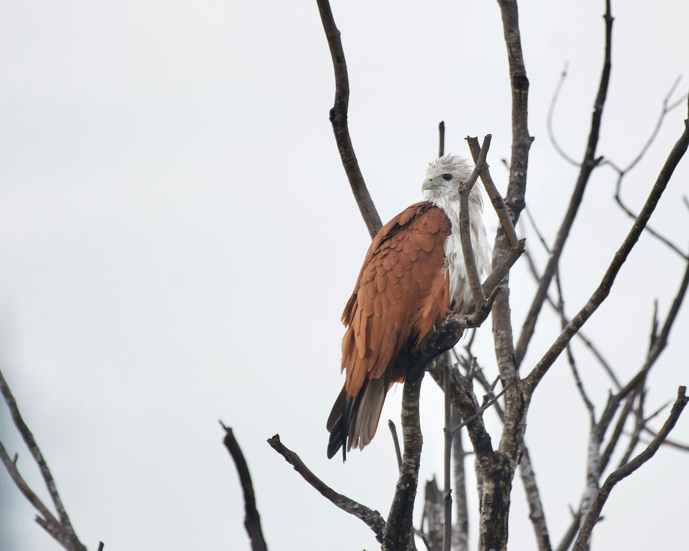

The Brahminy Kite is a striking raptor with a chestnut-brown body, contrasting white head and breast, broad wings, and a rounded tail. It is particularly associated with coastal areas, rivers, wetlands, and other places where fish and carrion are available. It often soars gracefully and can be seen perched near water. Its distinctive plumage makes it one of India's most recognizable birds of prey.